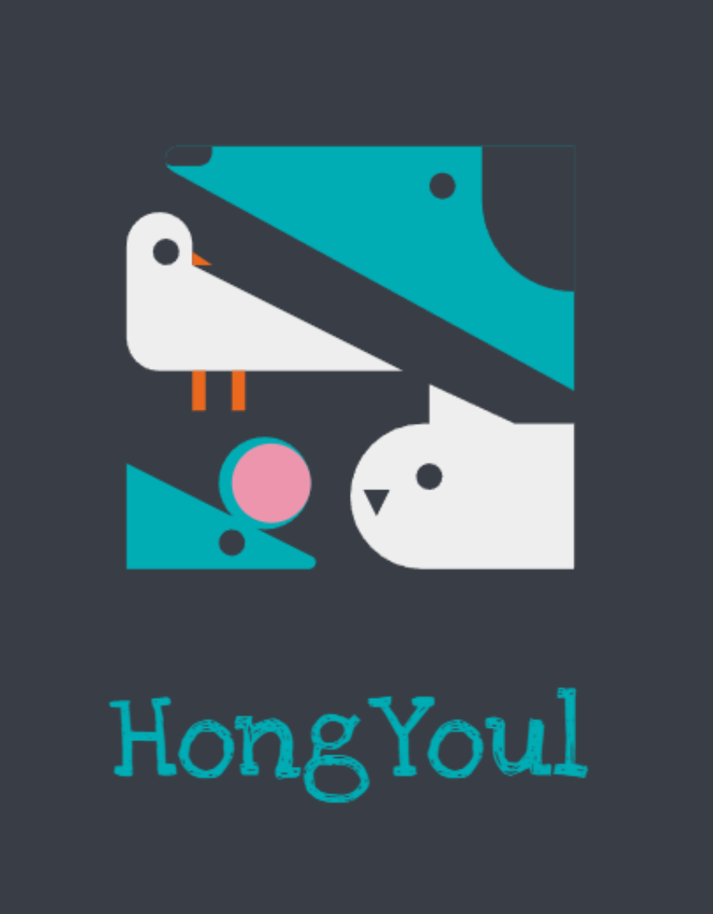

ABOUT
SKILL
WORK
CONTACT
프로필
close
ABOUT
CONTACT
Simple is Best
Yun Hong Youl
EDUCATION
10.03 ~ 12.02 OO학교 OO과 졸업
23.12 ~ 24.05 풀스택 개발자 과정 수료
SKILL
Java
Java
Programing
ES6+ 문법에 익숙합니다.
webpack, parcel 등의 번들러 사용 경험이 있습니다.
typescript를 사용할 수 있습니다.
디자인 시스템과 atomic 디자인에 대한 이해도가 높습니다.
Jest를 활용한 테스트코드 작성 경험이 있습니다.
Storybook 작성, 빌드 및 배포 경험이 있습니다.
Visual
HTML/CSS/JS
웹표준을 지키려 노력합니다.
CSS 문법에 익숙합니다.
styled-component, emotion을 활용할 수 있습니다.
BEM 방법론을 적용할 수 있습니다.
크로스 브라우징에 대응할 수 있습니다.
Antd, Chakra, Tailwind 등의 css 라이브러리를 사용할 수 있습니다.
keyframe을 활용한 애니메이션 기법을 활용할 수 있습니다.
Vue
Vue
vuex 사용 경험이 있습니다.
Vue2 option ap를 사용할 수 있습니다.
Vue3 composition api를 사용할 수 있습니다.
React
React
redux, redux saga, recoil 등의 상태관리 라이브러리 사용 경험이 있습니다.
next.js를 활용한 SSR 개발 경험이 있습니다.
WORK
프로젝트명
주요기능 :
주요 기능 설명
적용 기술 :
HTML, CSS, JS, Java, Spring Boot
GitHub :
깃 허브 주소
URL :
배포 주소
README
모달
프로젝트명
주요기능 :
주요 기능 설명
적용 기술 :
HTML, CSS, JS, Java, Spring Boot
GitHub :
깃 허브 주소
URL :
배포 주소
README
모달
프로젝트명
주요기능 :
주요 기능 설명
적용 기술 :
HTML, CSS, JS, Java, Spring Boot
GitHub :
깃 허브 주소
URL :
배포 주소
README
모달
CONTACT
GitHub 주소 : https://github.com/hongyoul
010-2548-5424
hongyoul@gmail.com
close
arrow_upward
 close
close
close
close
 close
close